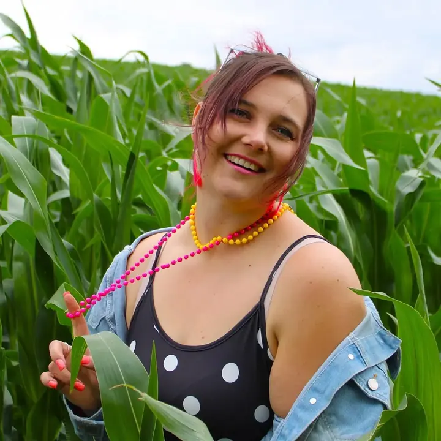
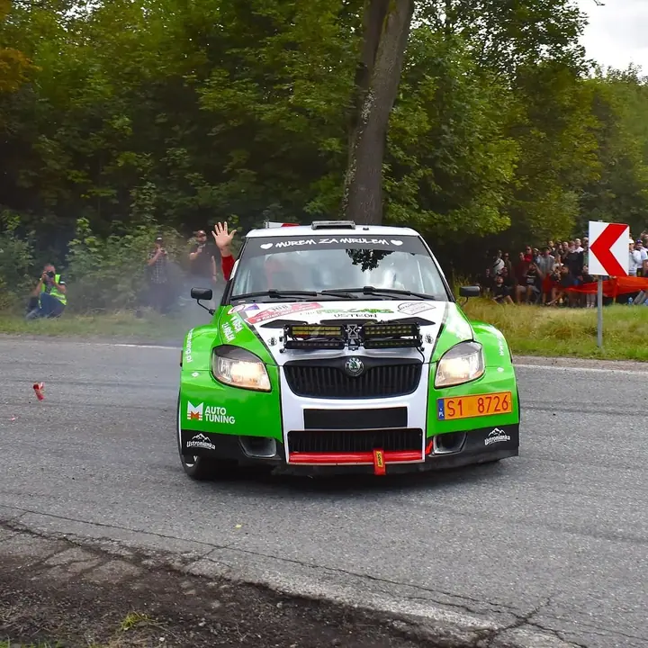
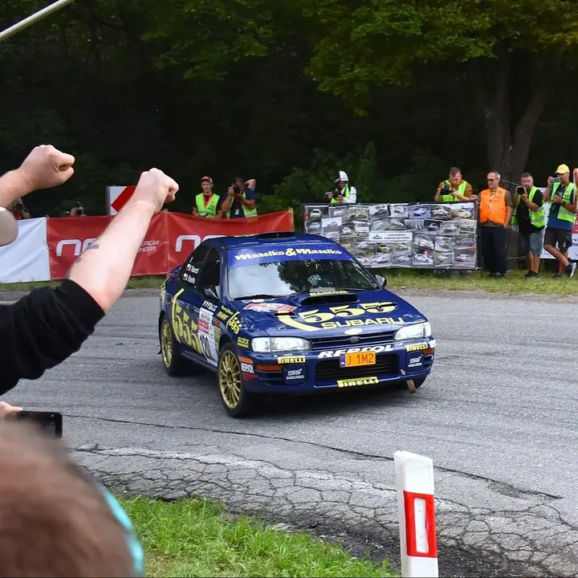
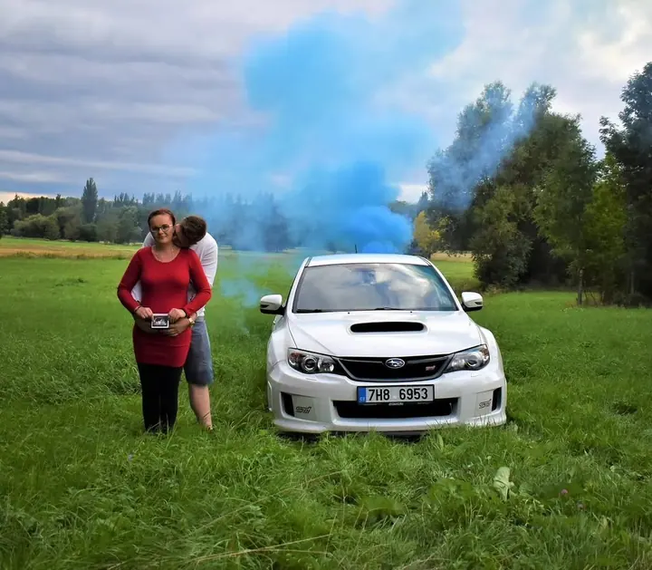
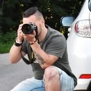

01 / 04
Focení párů
Fotím páry venku, v přírodě a klidně i s vaším autem. Na focení se domluvíme přes e-mail nebo zprávou na Instagramu.
Zeptat se na termín→



Páry, rodiny i auta. Pro radost.
Zeptat se na termín →(01) Ahoj
Jmenuji se Dubský a jsem kluk z Krkonoš , který fotí pro radost. Fotím páry , rodiny, automobily a kalendáře, a to zdarma.
965lidí sleduje mou práci na Instagramu
157příspěvků s fotkami a příběhy
(02) Co fotím
01 / 04
Fotím páry venku, v přírodě a klidně i s vaším autem. Na focení se domluvíme přes e-mail nebo zprávou na Instagramu.
Zeptat se na termín→02 / 04
Speciálně nabízím focení s barevnou dýmovnicí. Vyzkoušejte něco nového.
Zeptat se na termín→03 / 04
Fotím auta na srazech, na trati i na zakázku a z fotek můžu připravit kalendář.
Zeptat se na termín→Dále nabízím
Fotím i rodiny. Místo a nápad na focení vymyslíme spolu.
↗(04) Postup
Od první zprávy po hotovou galerii.
Krok 1 z 4
Ozvěte se e-mailem nebo zprávou na Instagramu a napište, co byste si představovali.
Krok 2 z 4
Vybereme spolu místo, termín a nápad, třeba focení s autem nebo s barevnou dýmovnicí.
Krok 3 z 4
Sejdeme se a fotíme v klidu a bez stresu. Po dohodě přijedu kamkoli v ČR.
Krok 4 z 4
Vybrané a upravené fotky vám pošlu, jakmile budou hotové.
Fotím zdarma, pro radost.
(05) Za objektivem
Jsem kluk z Krkonoš, co rád zachytí vaše okamžiky. Fotím pro radost, žádné profi foto, a právě proto fotím zdarma. Nebojte se mých služeb využít.
Nejvíc mě baví páry, rodiny a automobily, od srazů až po rallye tratě. Fotím i kalendáře a speciálně nabízím focení s barevnou dýmovnicí, když chcete zkusit něco nového.
Na focení se můžeme domluvit e-mailem nebo zprávou na Instagramu. Po dohodě dojedu po celé ČR.

Dubský
Dubský · Fotograf párů, rodin a aut
Fotím zdarma. Fotím pro radost, žádné profi foto.
Napište mi e-mail na dustersean@gmail.com nebo zprávu na Instagramu @dubsky_photography.
Ano, po dohodě dojedu po celé ČR.
Focení s barevným kouřem, který fotkám dodá výraznou barvu a atmosféru. Hodí se pro páry i pro focení s autem.
(07) Kontakt
Napište pár vět o tom, co si představujete, a termín, který se vám hodí.
dustersean@gmail.com